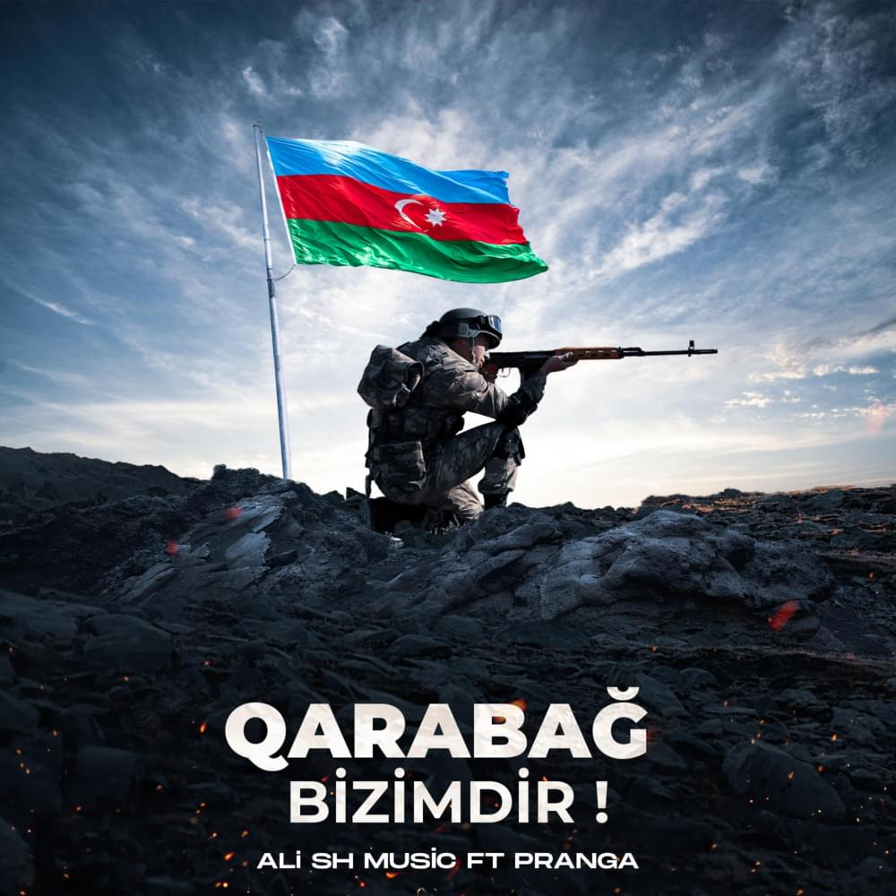

Qarabag Azerbaycandir

1990-cı illərin əvvəllərində, o vaxt Azərbaycanda hakimiyyətdə olmuş insanların xəyanəti, satqınlığı nəticəsində biz Dağlıq Qarabağı müvəqqəti olaraq itirdik. Mən bugünkü müsahibədə müstəqilliyə qədər bəzi məqamları dilə gətirdim ki, Azərbaycan ictimaiyyəti bu hadisələri unutmasın, gənc nəsil də bunu bilsin. Dağlıq Qarabağ bizim qədim, tarixi torpağımızdır və biz mütləq o torpaqlara qayıdacağıq. Dağıdılmış bütün tarixi abidələri, evləri bərpa edəcəyik. Küçələrə Azərbaycan adlarını verəcəyik, adları dəyişdirilmiş kəndlərə öz əsl adlarını qaytaracağıq. Biz mütləq bunu edəcəyik. Çünki haqq-ədalət bizim tərəfimizdədir. Bizim başqa ölkələrin torpağında gözümüz yoxdur, öz torpağımızı da heç kimə verən deyilik. Bu gün mövcud olan Ermənistan tarixi Azərbaycan torpaqlarında yaradılıbdır. Bu haqda kifayət qədər tarixi sənədlər var. İkinci erməni dövlətinin yaradılmasına biz heç vaxt imkan verməyəcəyik. Qarabağ bizimdir, Qarabağ Azərbaycandır! Qeyd olunur ki, Ermənistan Dağlıq Qarabağdakı erməniləri dəstəkləsə də, o, bu ərazini Azərbaycanın ərazisi kimi tanıyır. BMT Təhlükəsizlik Şurasının Ermənistan qoşunlarının Dağlıq Qarabağdan və onun ətrafındakı işğal olunmuş ərazilərdən dərhal çıxarılmasını tələb edən dörd qətnaməsinə baxmayaraq, 26 ildir ki, vəziyyət demək olar dəyişməz qalıb. “Oktyabrın 10-da Azərbaycan ilə Ermənistan arasında hər iki tərəfin əsir və cəsədlərinin mübadiləsinə icazə verilməsi üçün əldə edilmiş humanitar atəşkəs razılaşmasının pozulması, oktyabrın 11-də Azərbaycanın ikinci ən böyük şəhəri olan Gəncə və döyüş zonasından tamamilə kənarda yerləşən digər şəhərlərinin Ermənistan tərəfindən raket hücumuna məruz qalması xəbərləri məni çox kədərləndirir və narahat edir. Nəticədə uşaqlar da daxil olmaqla, mülki şəxslər qətlə yetirilib və yaralanıb”, - deyə məktubda vurğulayıb. Etnik erməni azlıqların hüquqlarını qorumaqla yanaşı, Azərbaycanın ərazi bütövlüyünü tanıyan qətnamənin qəbul edilməsinin vaxtının çatdığını bildirən Lord Malkolm Brus yazıb: “Beynəlxalq səviyyədə əldə olunmuş atəşkəs yalnız münaqişənin uzadılmasına xidmət edir. Azərbaycanda işləyən və azərbaycanlılarla birgə iş təcrübəsi olan biri kimi əminliklə deyə bilərəm ki, Azərbaycan çox dinc və tolerant insanları olan dünyəvi dövlətdir. Azərbaycanda ləzgilər, talışlar, kürdlər, ruslar və yəhudilər də daxil olmaqla, bir çox etnik azlıqlar birgə yaşayırlar. Həqiqətən də bu ölkədəki yəhudilər əsrlər boyu Azərbaycan müsəlmanları ilə heç bir münaqişə və ya narahatlıq ilə üzləşməyiblər. Azərbaycan böyük bir yəhudi icmasının məskunlaşdığı nadir müsəlman ölkəsidir”.